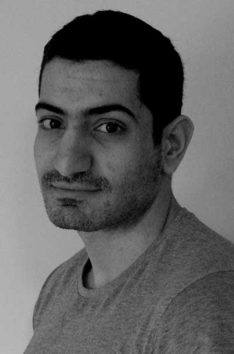
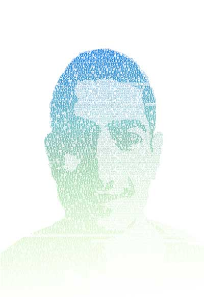
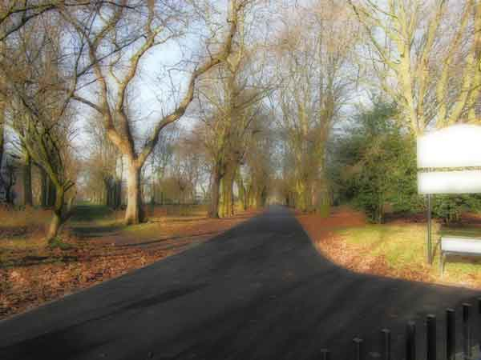
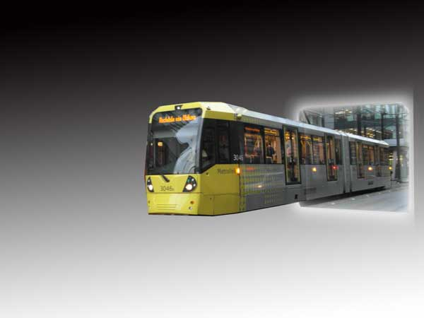
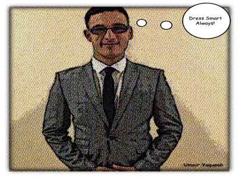

Umair Yaquoob
02 Feb 2014
First, before I started my day of shooting, I found the opportunity to take a portrait shot of my flat mate. I decided to use the natural lighting that was coming from the window to take the shot, as I believe natural lighting has an essence to connote simplicity in the frame. It was important to make sure my focus was central through the lens and then I had taken a prefect portrait shot of my flat mate Hussain. In early morning I had taken a landscape shot of the nature of trees in a nearby park, again I used natural lighting due to the conditions it was already sunny and although it was same to my first shot it brought out a different outcome due to there being more lighting. Then as I went into town, I had taken a shot of a passing tram for my object image, I taken this picture as a horizontal shot as I wanted to have the front facing of the tram and side facing together in the picture. Therefore, I stood at an angle in Piccadilly gardens by Primark to take a shot of an oncoming tram.
On the way back from work I shot a portrait of my flat mate for my artistic image. The frame that was chosen for this shot was a mid-shot consisting of my friends face and shoulders as it brought out close features. I directed my flat mate to stand behind the wall in our kitchen, which is a light colour, and again used lighting that was coming from the kitchen window, again the same natural lighting but a different effect due to it being at night and a single lighting shot from a nearby street light. For my pop art image, I got my flat mate to take a shot of me in my work suit. I stood near a wall in my kitchen, we used the natural light from the window, and he taken a portrait shot for me. I will show you the images I have done and applied effects in Photoshop below :
The images
Portrait (standard)
Standard portrait shot of my flat mate Hussain. I use my kitchen wall to make my flat mate stand where the natural sunlight was hitting onto the wall coming from the window in my kitchen. I used the portrait settings on my camera and made sure I was really focusing and making the shot central. Once I was happy with the position of my flat mate and camera angle I had taken a few shots and chose the best one. I decided to go for a passport style shot of a generic photo where I told my friend to put on a normal face and no emotions as it adds to the feeling of a ‘standard portrait’. As to the editing, I kept it minimal and changed the colour balance and levels to the picture to show the true colour of the picture and bring out the clarity of the image. In addition, I gave the image a black and white look which brings the lookers attention to just the standard image without any colours drawing any attention. However although it was a standard shot, for those who like to study images and positions in a photo, I wanted to bring out a portrayed image of struggle in my friends eyes. The connotations brought from the lack of emotion in my friends face implies pain and the feeling that he is fed up.
Portrait (artistic)
Coming back from work back to my flat I always have a catch up with my flat mate Hussain just to discuss how our day been. Therefore, I taken a portrait shot of my flat mate to use for artistic effect. I used the portrait settings on my camera to take the shot. I use the natural lighting that was coming into the lounge room where it was reflecting onto the wall. I made my flat mate stand against the wall and his head turn a bit to the left and then I taken the shot. I decided to go for a text effect on my image.
Landscape
This photograph is a rural landscape of trees in park near me. I have taken this photo with my landscape setting on my camera. I had taken this shot on a sunny day and I stood behind the park gate and I taken a shot of the trees. The reason behind this picture is that I could see myself walking along the path as I walked past the trees and I come here every morning just to think about life in a peaceful quiet atmosphere. I went for the glow effect, as I wanted the viewers’ attention to draw into the image as if they can picture themselves walking along the path.
Object
I chose to use a tram for my object the reason for this is I travel on a tram to see my friends in Oldham or Rochdale and Trafford occasionally. I had taken a shot with my digital camera with the landscape setting. I applied affects, which makes it look slightly 3d like as if the tram is to come out of the picture. I wanted people to have felt as if the tram is actually coming out of the photo, which gives a real life feeling like the tram is coming towards them.
Pop Art
This image is of me as a pop art image in my suit, part of my work uniform. The reason behind this picture was that I was wearing a nice new suit for work so I wanted to capture the moment of me all suited up. The effect I went for my pop art was a comic effect the reason behind this is because I use to read a lot of comics when I was little child especially the marvel comics. When I was child I imagined myself as the hero character in a popular comic, this gives a contrast of reality (going to work) and fantasy (comic books), which I wanted the viewer to grasp.
Return to top | Home